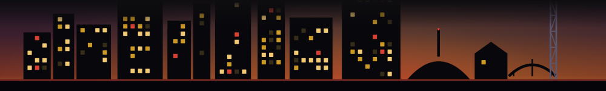

1
Handmade Pasta Making Class with Chef Taylor
Hands-on pasta making class with Chef Taylor at Mary Louise's Social Club inside Tempo by Hilton Nashville Downtown. Sales end soon.
closes Oct 23 · closes today

The closing Nashville windows you can book yourself, right now - one tap through to Resy, Tock, OpenTable or Eventbrite, the platform that actually sells it. No call, no waiting for business hours. Only windows that are genuinely bookable; we never point you at a dead link.
The source is Fleeting's own weekly discovery crawl of time-limited Nashville windows. A window appears here only when its own listing is a real reservation or ticket page on Resy, Tock, OpenTable or Eventbrite, the crawl could verify it, and it carries a real closing date that has not passed. A window that is call-ahead, walk-up, or only written up on a blog is not on this board - we would rather show you fewer, real booking links than one dead one. Each link goes to the listing's own page; booking happens there, with that platform, not with us. No alerts, no notifications, and we never book anything on your behalf - one email a week.
The windows worth booking are gone before most people hear about them. That is the whole problem Fleeting exists for. The Thursday list is the week's time-limited Nashville windows - the dinners, pop-ups and shows that will be gone by the weekend - in your inbox while they are still open and still bookable.
Get the Thursday list, free →Looking for everything that is open or closing next? See the conditions board. What already sold out? sold out this week. The full record is in the archive. Built October 23, 2026.